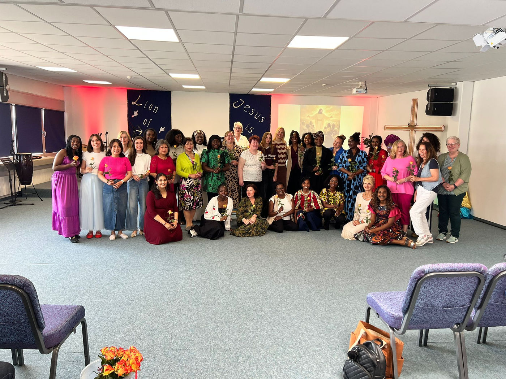
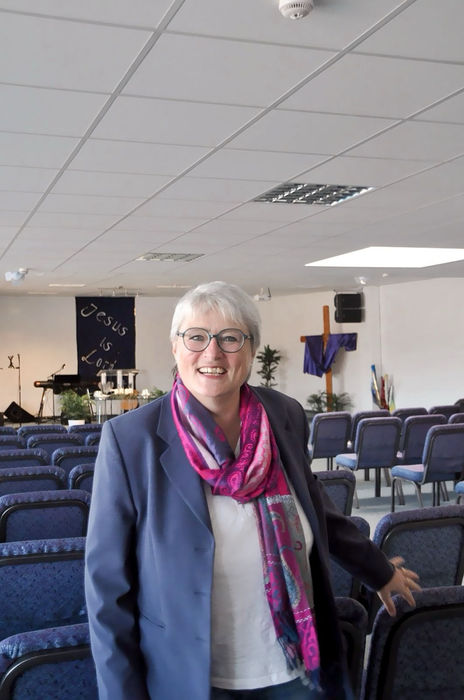
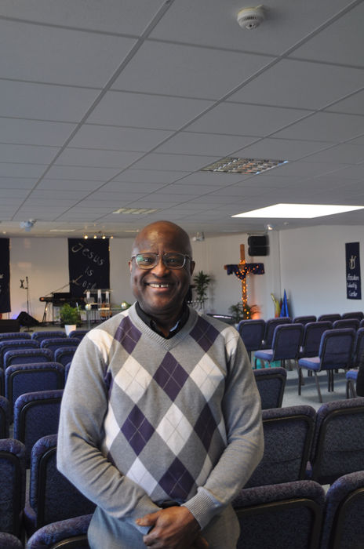
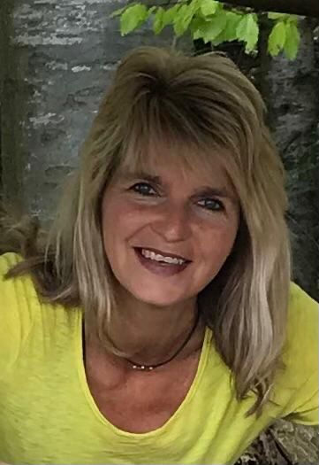
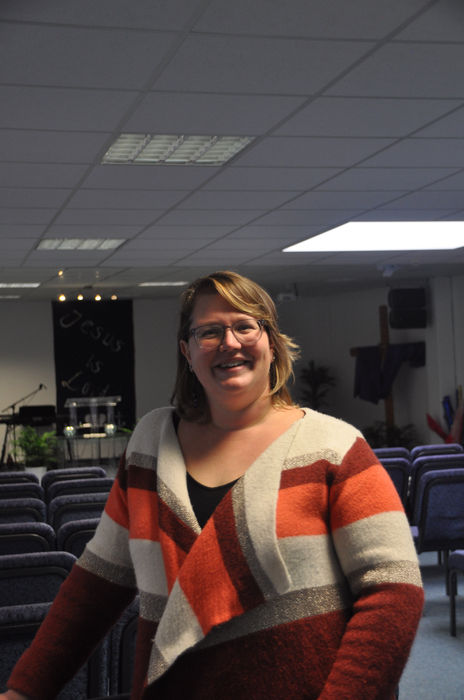
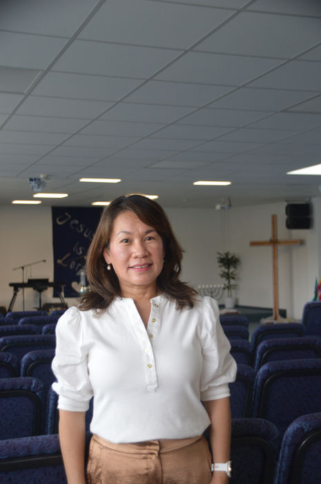
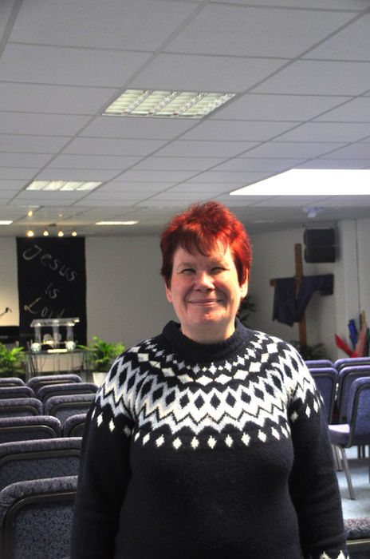

Über unsere Kirche.
Eine internationale christliche Kirche mit dem Auftrag, die Welt mit dem Evangelium von Jesus Christus zu erreichen, Seelen zu retten und Gottes Volk für den Dienst auszurüsten.
Eine Gemeinschaft in Liebe.
Wir bemühen uns, eine Gemeinschaft von Gläubigen in einer Atmosphäre der Liebe zu schaffen, die jeden Menschen umarmt – ein Umfeld, in dem er wachsen, seine Bestimmung entdecken und dem Herrn in seiner Berufung dienen kann.
Wir sind eine bibelgläubige Kirche, die das Wirken des Heiligen Geistes anerkennt und die volle Manifestation seiner Gegenwart, seiner Kraft und seiner Gaben in der Gemeinde annimmt. Als Ortsgemeinde dienen wir der Region Würzburg und bieten internationalen Besuchern eine Heimat. Durch Missionsreisen und Partnerschaften erreichen wir die Welt mit dem Evangelium.

Menschen gerettet, geheilt, befreit.
Zu sehen, wie Menschen gerettet, geheilt, befreit, zu Jüngern erzogen, ausgerüstet und befähigt werden, zu dienen.
Alle Nationen erreichen.
Wir sind eine Kirche an mehreren Standorten, deren Ziel es ist, alle Menschen aller Nationen und Kulturen zu erreichen, Jünger zu machen und sie zu hingebungsvollen Nachfolgern Christi auszurüsten.
Seit 1974 in Würzburg.
Was als Kirche für US-Soldaten begann, ist heute eine internationale Gemeinde für alle Menschen in Würzburg und Umgebung.

- 1974
Beginn als Servicemen Center in Gerbrunn am Kirschberg – ursprünglich eine Kirche für US-Soldaten in der Region Würzburg.
- 2002
Pastor Greg und Dana Smith werden als leitende Pastoren ordiniert.
- 2006
Umzug an den neuen Standort in der Ohmstraße 8.
- 2007
Alle Militärstützpunkte in Würzburg werden geschlossen. Gründung als Freedom Worship Center e.V., noch unter der Leitung der Church of God.
- 2014
Das Freedom Worship Center wird Teil der Church of God (Cleveland, Tennessee) – Freedom Outreach International.
- 2016
Pastor Greg gründet einen zweiten Campus in Velburg.
- 2018
Pastorin Heike Bauer wird als leitende Pastorin in Würzburg ordiniert.
Unser Team.

Heike Bauer
Seit 2002 wiedergeborene Christin und seit vielen Jahren Teil des FWC. Ihre Leidenschaft: Christus den Menschen bekannt zu machen und ihnen zu helfen, im Glauben zu wachsen.

Francis Aigbe
Sein Herzensanliegen: dass alle Menschen, vereint im Leib Christi, zusammenkommen, um Gott zu feiern und anzubeten.

Ulrike Sauer
„Wenn also der Sohn euch frei macht, seid ihr wirklich frei.“ (Joh 8,36) – Leiterin des DWJD-Heilungsdienstes.

Jacky Eseka
Liebt es, mit Kindern zu spielen, zu basteln, zu singen und ihnen Geschichten über Jesus vorzulesen.

Marie Ködel
Hat Jesus als Kind auf den Philippinen kennengelernt und gibt Gottes Liebe mit großer Leidenschaft an die nächste Generation weiter.

Sabine König
Übersetzt die Predigten und hilft in Fürsorge und Gastfreundschaft. Teil des Leiterschaftsteams.
Unser Glaube.
Wir glauben, dass die gesamte Bibel vollständig und gleichermaßen inspiriert ist und das geschriebene Wort Gottes ist. Als Teil der Church of God haben wir diese Glaubenserklärung übernommen.
- Die verbale Inspiration der Bibel.
- Einen Gott, der ewig in drei Personen existiert: Vater, Sohn und Heiliger Geist.
- Jesus Christus ist der eingeborene Sohn des Vaters, empfangen vom Heiligen Geist, geboren von der Jungfrau Maria, gekreuzigt, begraben und auferweckt. Er ist in den Himmel aufgefahren und tritt heute zur Rechten des Vaters für uns ein.
- Alle haben gesündigt; Buße ist von Gott allen geboten und für die Vergebung der Sünden notwendig.
- Rechtfertigung, Wiedergeburt und Neugeburt geschehen durch den Glauben an das Blut Jesu Christi.
- Heiligung nach der Neugeburt durch den Glauben an das Blut Christi, durch das Wort und durch den Heiligen Geist. Heiligkeit ist Gottes Lebensstandard für sein Volk.
- Die Taufe mit dem Heiligen Geist nach einem reinen Herzen – mit dem Sprechen in anderen Zungen als erstem Zeichen.
- Die Wassertaufe durch Untertauchen im Namen des Vaters, des Sohnes und des Heiligen Geistes.
- Göttliche Heilung für alle durch das Sühnopfer.
- Das Abendmahl und die Fußwaschung der Heiligen.
- Das vortausendjährige zweite Kommen Jesu.
- Die leibliche Auferstehung: ewiges Leben für die Gerechten und ewige Strafe für die Bösen.

Dienste, die wir unterstützen.
Durch Gebet und Spenden unterstützen wir beständig Missionswerke in aller Welt.
- Martin Espiritu Ministries (MEMP), Philippinen
- Kingdom Empowerment Uganda e.V.
- European Theological Seminary
- Lighthouse Global Missions
- Vision for Israel
- Running for Hope
- Carriers of The Flame e.V.
- Freedom Outreach International
Unsere Arme sind offen.
Wenn du in der Gegend bist, komm zu unseren Treffen und werde Teil unserer Kirchenfamilie.